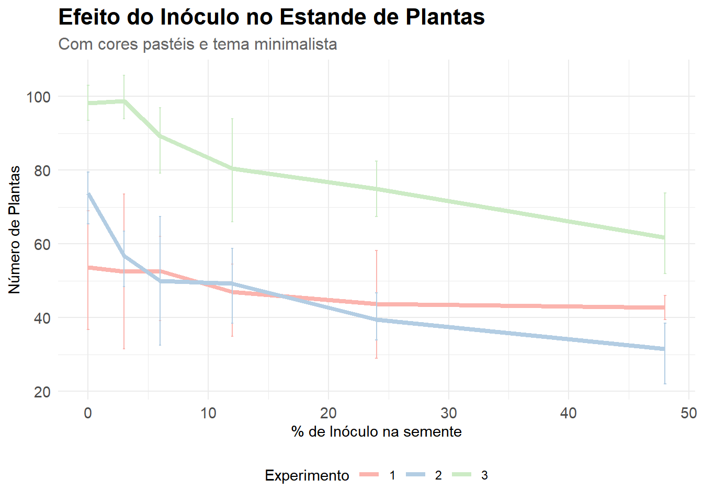

Code
library(ggplot2)
library(gsheet)
# Dados: Estande de plantas
estande <- gsheet2tbl("https://docs.google.com/spreadsheets/d/1bq2N19DcZdtax2fQW9OHSGMR0X2__Z9T/edit?gid=401662555#gid=401662555")
# Definindo paleta pastel
cores_pastel <- c("#FBB4AE", "#B3CDE3", "#CCEBC5")
# Gráfico com tema e paleta
ggplot(estande, aes(x = trat, y = nplants, group = exp, color = factor(exp))) +
stat_summary(fun = mean, geom = "line", linewidth = 1.5) +
stat_summary(fun.data = mean_cl_boot, geom = "errorbar", width = 0.2) +
scale_color_manual(values = cores_pastel) +
labs(title = "Efeito do Inóculo no Estande de Plantas",
subtitle = "Com cores pastéis e tema minimalista",
x = "% de Inóculo na semente",
y = "Número de Plantas",
color = "Experimento") +
theme_minimal() +
theme(
plot.title = element_text(face = "bold", size = 16),
plot.subtitle = element_text(size = 12, color = "gray40"),
axis.text = element_text(size = 11),
legend.position = "bottom"
)